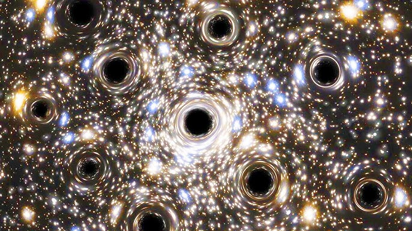
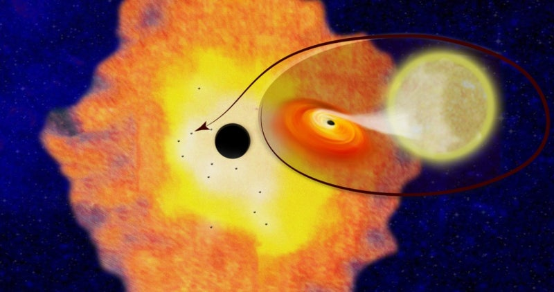
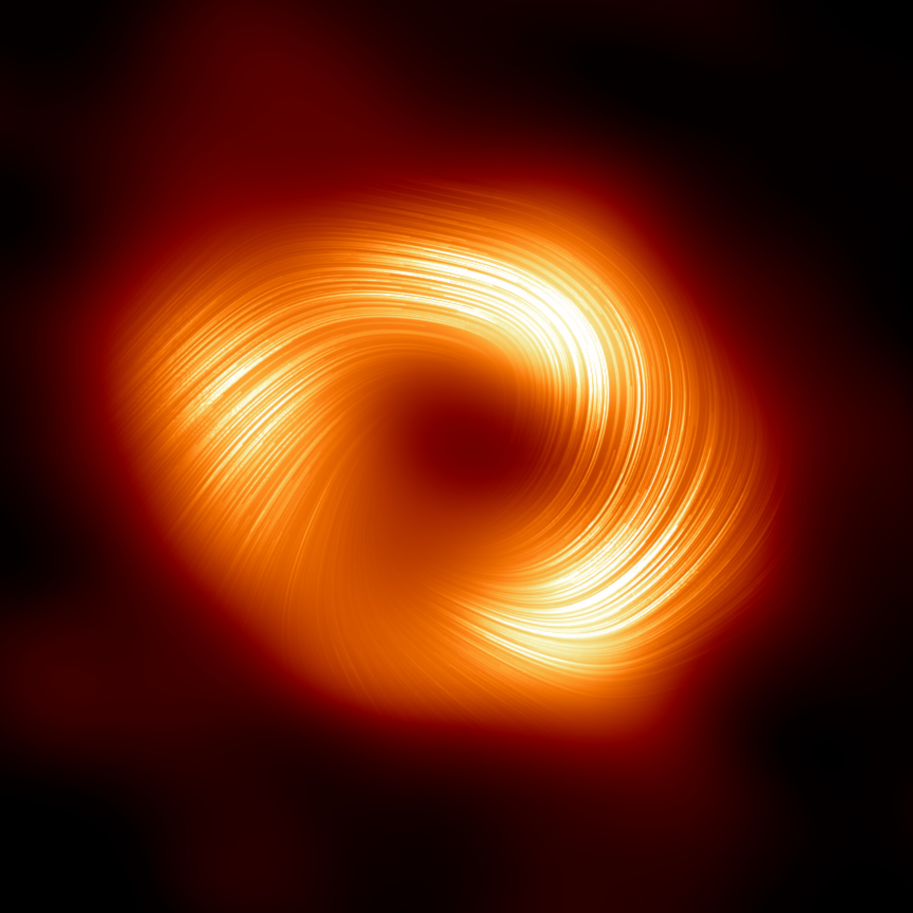
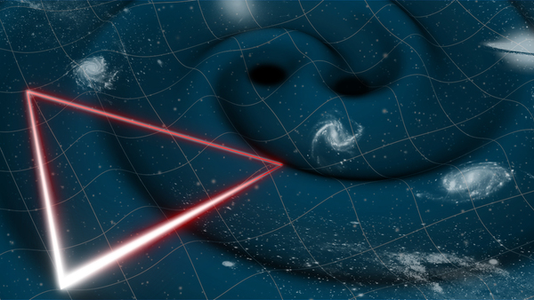

최근 블랙홀 연구
과학자들은 중력파를 통해 블랙홀 충돌을 연구하며, 새로운 발견이 계속 이루어지고 있습니다.

우주가 블랙홀 안에 있을 수도?
일부 이론에서는 우리 우주가 초대형 블랙홀 내부에 존재할 가능성이 제기되고 있습니다. 이는 시계방향 은하 회전의 비대칭성과 관련된 연구로, 우주의 기원을 새롭게 해석할 수 있는 단서를 제공합니다.

초고속 블랙홀 성장 발견
NASA는 초기 우주에서 평균보다 40배 빠르게 성장하는 초대질량 블랙홀을 발견했습니다. 이는 우주 초기의 구조 형성과 은하 진화에 대한 이론을 재조명하게 만들고 있습니다.

우리 은하 중심의 자기장 정렬 관측
사건지평선망원경(EHT)을 통해 우리 은하 중심 블랙홀 주변의 자기장이 정렬된 모습을 포착했습니다. 이는 블랙홀 주변 물질의 흐름과 제트 생성 메커니즘을 이해하는 데 큰 도움이 됩니다.

우주 기반 간섭계 기술 발전
연구자들은 우주에 간섭계를 배치해 블랙홀의 그림자를 고해상도로 관측하려는 기술을 개발 중입니다. 이는 블랙홀 이미징의 정확도를 비약적으로 향상시킬 전망입니다.